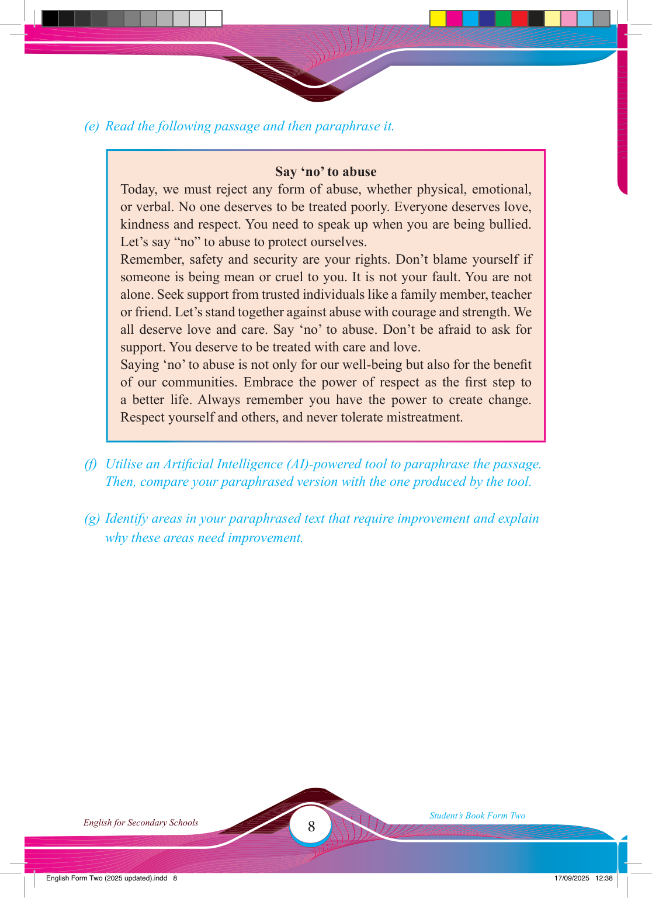

(e) Read the following passage and then paraphrase it.
Say ‘no’ to abuse
Today, we must reject any form of abuse, whether physical, emotional, or verbal. No one deserves to be treated poorly. Everyone deserves love, kindness and respect. You need to speak up when you are being bullied.
Let’s say “no” to abuse to protect ourselves.
Remember, safety and security are your rights. Don’t blame yourself if someone is being mean or cruel to you. It is not your fault. You are not alone. Seek support from trusted individuals like a family member, teacher or friend. Let’s stand together against abuse with courage and strength. We all deserve love and care. Say ‘no’ to abuse. Don’t be afraid to ask for support. You deserve to be treated with care and love.
Saying ‘no’ to abuse is not only for our well-being but also for the benefi t of our communities. Embrace the power of respect as the fi rst step to a better life. Always remember you have the power to create change.
Respect yourself and others, and never tolerate mistreatment.
(f) Utilise an Artifi cial Intelligence (AI)-powered tool to paraphrase the passage.
Then, compare your paraphrased version with the one produced by the tool.
(g) Identify areas in your paraphrased text that require improvement and explain why these areas need improvement.
17/09/2025 12:38